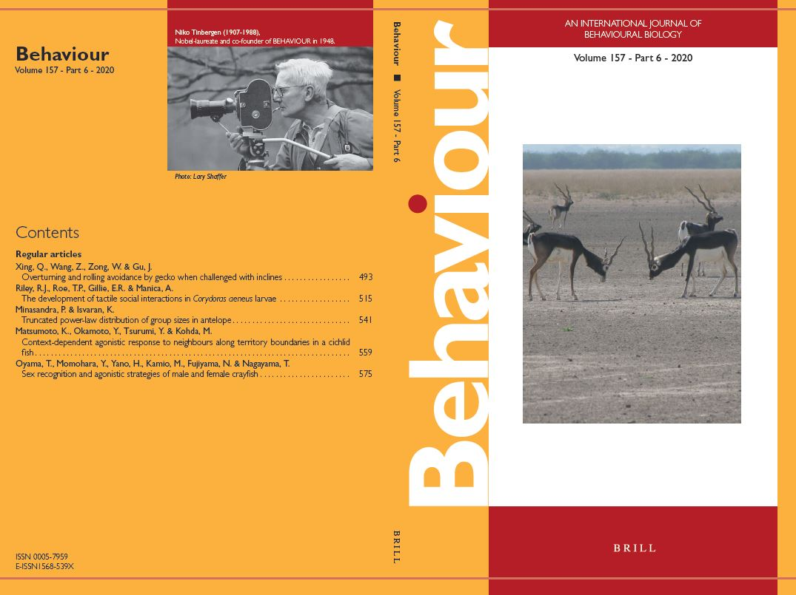

2020 May 14
My first publication, Minasandra, P., & Isvaran, K. (2020). Truncated power-law distribution of group sizes in antelope, Behaviour, is up today. Feel free to contact me for the pdf.
2020 Apr 24
Very pleased to announce that I will be joining the IMPRS for Organismal Biology for a PhD with Ariana Strandburg-Peshkin and Alex Jordan, working on synchronisation in social animals.
2020 Apr 18
My coronavirus outreach model was covered today in The New Indian Express! Yay! My first time being covered by the press!
2020 Apr 06
From Mar 30, I have been working with Vishu Guttal on an age-structured SEIR model for the coronavirus pandemic; as an outreach activity. Please find it here.
2020 Jan 28
Received an offer for a PhD at the Department of Ecology and Evolutionary Biology, University of Toronto; at Nicole Mideo's group.
2020 Jan 01
Began my 10th -- and last -- semester at IISc. This semester, I will mainly be focussing on my thesis project, but will also be forced to take a lab course in Experimental Neurobiology.
2019 Aug 01
Began my 9th semester at IISc, and will take courses in Stochastic and Spatial Dynamics in Biology; but also, sadly, in Immunology, Cell Biology, and Microbiology. :(
2019 June 24
Returned to the Indian Institute of Science at Bengaluru. Will continue working on the project with Ari remotely.
2019 May 22
Began my summer stay at Konstanz, Germany; and started working with Prof Ariana Strandburg-Peshkin on a project involving the development of a machine-learning based behavioural classifier for the Spotted Hyena, Crocuta crocuta.
2019 April 12
Received an offer for a PhD at the University of Maryland, with Prof Bill Fagan. Although delighted, I will defer this offer to 2020; and focus on developing the necessary technical and non-technical skills for a PhD over the next year.